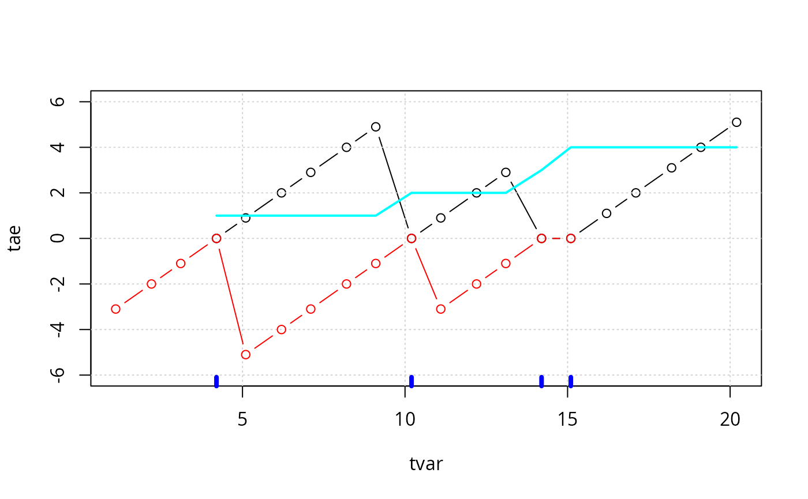

doby: Groupwise computations and miscellaneous utilities
Søren Højsgaard
doby.rmdThe package contains a variety of utility functions. This working document describes some of these functions. The package originally grew out of a need to calculate groupwise summary statistics (much in the spirit of of the system), but today the package contains many different utilities.
library(doBy)The description of the package is based on the dataset.
head(mtcars)
#> mpg cyl disp hp drat wt qsec vs am gear carb
#> Mazda RX4 21.0 6 160 110 3.90 2.62 16.5 0 1 4 4
#> Mazda RX4 Wag 21.0 6 160 110 3.90 2.88 17.0 0 1 4 4
#> Datsun 710 22.8 4 108 93 3.85 2.32 18.6 1 1 4 1
#> Hornet 4 Drive 21.4 6 258 110 3.08 3.21 19.4 1 0 3 1
#> Hornet Sportabout 18.7 8 360 175 3.15 3.44 17.0 0 0 3 2
#> Valiant 18.1 6 225 105 2.76 3.46 20.2 1 0 3 1
tail(mtcars)
#> mpg cyl disp hp drat wt qsec vs am gear carb
#> Porsche 914-2 26.0 4 120.3 91 4.43 2.14 16.7 0 1 5 2
#> Lotus Europa 30.4 4 95.1 113 3.77 1.51 16.9 1 1 5 2
#> Ford Pantera L 15.8 8 351.0 264 4.22 3.17 14.5 0 1 5 4
#> Ferrari Dino 19.7 6 145.0 175 3.62 2.77 15.5 0 1 5 6
#> Maserati Bora 15.0 8 301.0 335 3.54 3.57 14.6 0 1 5 8
#> Volvo 142E 21.4 4 121.0 109 4.11 2.78 18.6 1 1 4 2A description of the variable names can be found here: ; see also .
Groupwise computations
summaryBy() and summary_by()
The function is used for calculating quantities like ``the mean and variance of numerical variables \(x\) and \(y\) for each combination of two factors \(A\) and \(B\)’’. Notice: A functionality similar to is provided by from base .
myfun1 <- function(x){
c(m=mean(x), s=sd(x))
}
summaryBy(cbind(mpg, cyl, lh=log(hp)) ~ vs,
data=mtcars, FUN=myfun1)
#> vs mpg.m mpg.s cyl.m cyl.s lh.m lh.s
#> 1 0 16.6 3.86 7.44 1.149 5.20 0.330
#> 2 1 24.6 5.38 4.57 0.938 4.48 0.289A simpler call is
summaryBy(mpg ~ vs, data=mtcars, FUN=mean)
#> vs mpg.mean
#> 1 0 16.6
#> 2 1 24.6Instead of formula we may specify a list containing the left hand side and the right hand side of a formula but that is possible only for variables already in the dataframe:
summaryBy(list(c("mpg", "cyl"), "vs"),
data=mtcars, FUN=myfun1)
#> vs mpg.m mpg.s cyl.m cyl.s
#> 1 0 16.6 3.86 7.44 1.149
#> 2 1 24.6 5.38 4.57 0.938Inspired by the package, there is a function which does the samme as but with the data argument being the first so that one may write
mtcars |> summary_by(cbind(mpg, cyl, lh=log(hp)) ~ vs,
FUN=myfun1)
#> vs mpg.m mpg.s cyl.m cyl.s lh.m lh.s
#> 1 0 16.6 3.86 7.44 1.149 5.20 0.330
#> 2 1 24.6 5.38 4.57 0.938 4.48 0.289orderBy() and order_by()
Ordering (or sorting) a data frame is possible with the function. For example, we order the rows according to and (within ):
x1 <- orderBy(~ gear + carb, data=mtcars)
head(x1, 4)
#> mpg cyl disp hp drat wt qsec vs am gear carb
#> Hornet 4 Drive 21.4 6 258 110 3.08 3.21 19.4 1 0 3 1
#> Valiant 18.1 6 225 105 2.76 3.46 20.2 1 0 3 1
#> Toyota Corona 21.5 4 120 97 3.70 2.46 20.0 1 0 3 1
#> Hornet Sportabout 18.7 8 360 175 3.15 3.44 17.0 0 0 3 2
tail(x1, 4)
#> mpg cyl disp hp drat wt qsec vs am gear carb
#> Lotus Europa 30.4 4 95.1 113 3.77 1.51 16.9 1 1 5 2
#> Ford Pantera L 15.8 8 351.0 264 4.22 3.17 14.5 0 1 5 4
#> Ferrari Dino 19.7 6 145.0 175 3.62 2.77 15.5 0 1 5 6
#> Maserati Bora 15.0 8 301.0 335 3.54 3.57 14.6 0 1 5 8If we want the ordering to be by decreasing values of one of the variables, we can do
x2 <- orderBy(~ -gear + carb, data=mtcars)Alternative forms are:
splitBy() and split_by()
Suppose we want to split the data into a list of dataframes, e.g. one dataframe for each month. This can be achieved by:
x <- splitBy(~ Month, data=airquality)
x <- splitBy(~ vs, data=mtcars)
lapply(x, head, 4)
#> $`0`
#> mpg cyl disp hp drat wt qsec vs am gear carb
#> Mazda RX4 21.0 6 160 110 3.90 2.62 16.5 0 1 4 4
#> Mazda RX4 Wag 21.0 6 160 110 3.90 2.88 17.0 0 1 4 4
#> Hornet Sportabout 18.7 8 360 175 3.15 3.44 17.0 0 0 3 2
#> Duster 360 14.3 8 360 245 3.21 3.57 15.8 0 0 3 4
#>
#> $`1`
#> mpg cyl disp hp drat wt qsec vs am gear carb
#> Datsun 710 22.8 4 108 93 3.85 2.32 18.6 1 1 4 1
#> Hornet 4 Drive 21.4 6 258 110 3.08 3.21 19.4 1 0 3 1
#> Valiant 18.1 6 225 105 2.76 3.46 20.2 1 0 3 1
#> Merc 240D 24.4 4 147 62 3.69 3.19 20.0 1 0 4 2
attributes(x)
#> $names
#> [1] "0" "1"
#>
#> $groupid
#> vs
#> 1 0
#> 2 1
#>
#> $idxvec
#> $idxvec$`0`
#> [1] 1 2 5 7 12 13 14 15 16 17 22 23 24 25 27 29 30 31
#>
#> $idxvec$`1`
#> [1] 3 4 6 8 9 10 11 18 19 20 21 26 28 32
#>
#>
#> $grps
#> [1] "0" "0" "1" "1" "0" "1" "0" "1" "1" "1" "1" "0" "0" "0" "0" "0" "0" "1" "1"
#> [20] "1" "1" "0" "0" "0" "0" "1" "0" "1" "0" "0" "0" "1"
#>
#> $class
#> [1] "splitByData" "list"Alternative forms are:
subsetBy() and subset_by()
Suppose we want to select those rows within each month for which the the wind speed is larger than the mean wind speed (within the month). This is achieved by:
x <- subsetBy(~am, subset=mpg > mean(mpg), data=mtcars)
head(x)
#> mpg cyl disp hp drat wt qsec vs am gear carb
#> 1.Fiat 128 32.4 4 78.7 66 4.08 2.20 19.5 1 1 4 1
#> 1.Honda Civic 30.4 4 75.7 52 4.93 1.61 18.5 1 1 4 2
#> 1.Toyota Corolla 33.9 4 71.1 65 4.22 1.83 19.9 1 1 4 1
#> 1.Fiat X1-9 27.3 4 79.0 66 4.08 1.94 18.9 1 1 4 1
#> 1.Porsche 914-2 26.0 4 120.3 91 4.43 2.14 16.7 0 1 5 2
#> 1.Lotus Europa 30.4 4 95.1 113 3.77 1.51 16.9 1 1 5 2Note that the statement is evaluated within each month.
Alternative forms are
transformBy() and transform_by()
The function is analogous to the function except that it works within groups. For example:
head(x)
#> mpg cyl disp hp drat wt qsec vs am gear carb
#> 0.Mazda RX4 21.0 6 160 110 3.90 2.62 16.5 0 1 4 4
#> 0.Mazda RX4 Wag 21.0 6 160 110 3.90 2.88 17.0 0 1 4 4
#> 0.Hornet Sportabout 18.7 8 360 175 3.15 3.44 17.0 0 0 3 2
#> 0.Merc 450SL 17.3 8 276 180 3.07 3.73 17.6 0 0 3 3
#> 0.Pontiac Firebird 19.2 8 400 175 3.08 3.85 17.1 0 0 3 2
#> 0.Porsche 914-2 26.0 4 120 91 4.43 2.14 16.7 0 1 5 2
x <- transformBy(~vs, data=mtcars,
min.mpg=min(mpg), max.mpg=max(mpg))
head(x)
#> mpg cyl disp hp drat wt qsec vs am gear carb min.mpg max.mpg
#> 1 21.0 6 160 110 3.90 2.62 16.5 0 1 4 4 10.4 26
#> 2 21.0 6 160 110 3.90 2.88 17.0 0 1 4 4 10.4 26
#> 3 18.7 8 360 175 3.15 3.44 17.0 0 0 3 2 10.4 26
#> 4 14.3 8 360 245 3.21 3.57 15.8 0 0 3 4 10.4 26
#> 5 16.4 8 276 180 3.07 4.07 17.4 0 0 3 3 10.4 26
#> 6 17.3 8 276 180 3.07 3.73 17.6 0 0 3 3 10.4 26Alternative forms:
x <- transformBy("vs", data=mtcars,
min.mpg=min(mpg), max.mpg=max(mpg))
x <- mtcars |> transform_by("vs",
min.mpg=min(mpg), max.mpg=max(mpg))lapplyBy() and lapply_by()
This function is a wrapper for first splitting data into a list according to the formula (using splitBy) and then applying a function to each element of the list (using lapply).
lapplyBy(~vs, data=mtcars,
FUN=function(d) lm(mpg~cyl, data=d) |> summary() |> coef())
#> $`0`
#> Estimate Std. Error t value Pr(>|t|)
#> (Intercept) 36.93 3.69 10.01 2.73e-08
#> cyl -2.73 0.49 -5.56 4.27e-05
#>
#> $`1`
#> Estimate Std. Error t value Pr(>|t|)
#> (Intercept) 41.9 5.78 7.26 0.00001
#> cyl -3.8 1.24 -3.07 0.00978Miscellaneous utilities
firstobs() and lastobs()
To obtain the indices of the first/last occurences of an item in a vector do:
The same can be done on variables in a data frame, e.g.
The location of the \(n\) largest / smallest entries in a numeric vector can be obtained with
x <- c(1:4, 0:5, 11, NA, NA)
which.maxn(x, 3)
#> [1] 11 10 4
which.minn(x, 5)
#> [1] 5 1 6 2 7Subsequences - subSeq()
Find (sub) sequences in a vector:
x <- c(1, 1, 2, 2, 2, 1, 1, 3, 3, 3, 3, 1, 1, 1)
subSeq(x)
#> first last slength midpoint value
#> 1 1 2 2 2 1
#> 2 3 5 3 4 2
#> 3 6 7 2 7 1
#> 4 8 11 4 10 3
#> 5 12 14 3 13 1
subSeq(x, item=1)
#> first last slength midpoint value
#> 1 1 2 2 2 1
#> 2 6 7 2 7 1
#> 3 12 14 3 13 1
subSeq(letters[x])
#> first last slength midpoint value
#> 1 1 2 2 2 a
#> 2 3 5 3 4 b
#> 3 6 7 2 7 a
#> 4 8 11 4 10 c
#> 5 12 14 3 13 a
subSeq(letters[x], item="a")
#> first last slength midpoint value
#> 1 1 2 2 2 a
#> 2 6 7 2 7 a
#> 3 12 14 3 13 aRenaming columns of a dataframe or matrix - renameCol()
head(renameCol(mtcars, c("vs", "mpg"), c("vs_", "mpg_")))
#> mpg_ cyl disp hp drat wt qsec vs_ am gear carb
#> Mazda RX4 21.0 6 160 110 3.90 2.62 16.5 0 1 4 4
#> Mazda RX4 Wag 21.0 6 160 110 3.90 2.88 17.0 0 1 4 4
#> Datsun 710 22.8 4 108 93 3.85 2.32 18.6 1 1 4 1
#> Hornet 4 Drive 21.4 6 258 110 3.08 3.21 19.4 1 0 3 1
#> Hornet Sportabout 18.7 8 360 175 3.15 3.44 17.0 0 0 3 2
#> Valiant 18.1 6 225 105 2.76 3.46 20.2 1 0 3 1Time since an event - timeSinceEvent()
Consider the vector
yvar <- c(0, 0, 0, 1, 0, 0, 0, 0, 0, 1, 0, 0, 0, 1, 1, 0, 0, 0, 0, 0)Imagine that “1” indicates an event of some kind which takes place at a certain time point. By default time points are assumed equidistant but for illustration we define time time variable
Now we find time since event as
tse <- timeSinceEvent(yvar, tvar)
tse
#> yvar tvar abs.tse sign.tse ewin run tae tbe
#> 1 0 1.1 3.1 -3.1 1 NA NA -3.1
#> 2 0 2.2 2.0 -2.0 1 NA NA -2.0
#> 3 0 3.1 1.1 -1.1 1 NA NA -1.1
#> 4 1 4.2 0.0 0.0 1 1 0.0 0.0
#> 5 0 5.1 0.9 0.9 1 1 0.9 -5.1
#> 6 0 6.2 2.0 2.0 1 1 2.0 -4.0
#> 7 0 7.1 2.9 2.9 1 1 2.9 -3.1
#> 8 0 8.2 2.0 -2.0 2 1 4.0 -2.0
#> 9 0 9.1 1.1 -1.1 2 1 4.9 -1.1
#> 10 1 10.2 0.0 0.0 2 2 0.0 0.0
#> 11 0 11.1 0.9 0.9 2 2 0.9 -3.1
#> 12 0 12.2 2.0 2.0 2 2 2.0 -2.0
#> 13 0 13.1 1.1 -1.1 3 2 2.9 -1.1
#> 14 1 14.2 0.0 0.0 3 3 0.0 0.0
#> 15 1 15.1 0.0 0.0 4 4 0.0 0.0
#> 16 0 16.2 1.1 1.1 4 4 1.1 NA
#> 17 0 17.1 2.0 2.0 4 4 2.0 NA
#> 18 0 18.2 3.1 3.1 4 4 3.1 NA
#> 19 0 19.1 4.0 4.0 4 4 4.0 NA
#> 20 0 20.2 5.1 5.1 4 4 5.1 NA
plot(sign.tse ~ tvar, data=tse, type="b")
grid()
rug(tse$tvar[tse$yvar == 1], col="blue",lwd=4)
points(scale(tse$run), col=tse$run, lwd=2)
lines(abs.tse + .2 ~ tvar, data=tse, type="b",col=3)
plot(tae ~ tvar, data=tse, ylim=c(-6,6), type="b")
grid()
lines(tbe ~ tvar, data=tse, type="b", col="red")
rug(tse$tvar[tse$yvar==1], col="blue", lwd=4)
lines(run ~ tvar, data=tse, col="cyan", lwd=2)
plot(ewin ~ tvar, data=tse, ylim=c(1, 4))
rug(tse$tvar[tse$yvar==1], col="blue", lwd=4)
grid()
lines(run ~ tvar, data=tse, col="red")
We may now find times for which time since an event is at most 1 as
tse$tvar[tse$abs <= 1]
#> [1] 4.2 5.1 10.2 11.1 14.2 15.1Example: Using subSeq() and timeSinceEvent()
Consider the data:
lynx <- as.numeric(lynx)
tvar <- 1821:1934
plot(tvar, lynx, type="l")Suppose we want to estimate the cycle lengths. One way of doing this is as follows:
yyy <- lynx > mean(lynx)
head(yyy)
#> [1] FALSE FALSE FALSE FALSE FALSE TRUE
sss <- subSeq(yyy, TRUE)
sss
#> first last slength midpoint value
#> 1 6 10 5 8 TRUE
#> 2 16 19 4 18 TRUE
#> 3 27 28 2 28 TRUE
#> 4 35 38 4 37 TRUE
#> 5 44 47 4 46 TRUE
#> 6 53 55 3 54 TRUE
#> 7 63 66 4 65 TRUE
#> 8 75 76 2 76 TRUE
#> 9 83 87 5 85 TRUE
#> 10 92 96 5 94 TRUE
#> 11 104 106 3 105 TRUE
#> 12 112 114 3 113 TRUECreate the “event vector”
yvar <- rep(0, length(lynx))
yvar[sss$midpoint] <- 1
str(yvar)
#> num [1:114] 0 0 0 0 0 0 0 1 0 0 ...
tse <- timeSinceEvent(yvar,tvar)
head(tse, 20)
#> yvar tvar abs.tse sign.tse ewin run tae tbe
#> 1 0 1821 7 -7 1 NA NA -7
#> 2 0 1822 6 -6 1 NA NA -6
#> 3 0 1823 5 -5 1 NA NA -5
#> 4 0 1824 4 -4 1 NA NA -4
#> 5 0 1825 3 -3 1 NA NA -3
#> 6 0 1826 2 -2 1 NA NA -2
#> 7 0 1827 1 -1 1 NA NA -1
#> 8 1 1828 0 0 1 1 0 0
#> 9 0 1829 1 1 1 1 1 -9
#> 10 0 1830 2 2 1 1 2 -8
#> 11 0 1831 3 3 1 1 3 -7
#> 12 0 1832 4 4 1 1 4 -6
#> 13 0 1833 5 5 1 1 5 -5
#> 14 0 1834 4 -4 2 1 6 -4
#> 15 0 1835 3 -3 2 1 7 -3
#> 16 0 1836 2 -2 2 1 8 -2
#> 17 0 1837 1 -1 2 1 9 -1
#> 18 1 1838 0 0 2 2 0 0
#> 19 0 1839 1 1 2 2 1 -9
#> 20 0 1840 2 2 2 2 2 -8We get two different (not that different) estimates of period lengths:
len1 <- tapply(tse$ewin, tse$ewin, length)
len2 <- tapply(tse$run, tse$run, length)
c(median(len1), median(len2), mean(len1), mean(len2))
#> [1] 9.50 9.00 9.50 8.92We can overlay the cycles as:
plot(tvar, lynx, type="l", lty=2)
mm <- lm(lynx ~ tae + I(tae^2) + I(tae^3), data=tse2)
lines(fitted(mm) ~ tvar, data=tse2, col="red")Credit is due to Dennis Chabot, Gabor Grothendieck, Paul Murrell and Jim Robison-Cox for reporting various bugs and making various suggestions to the functionality in the package.